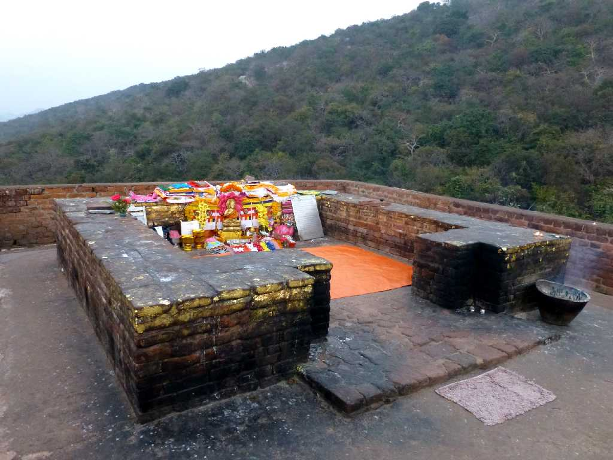
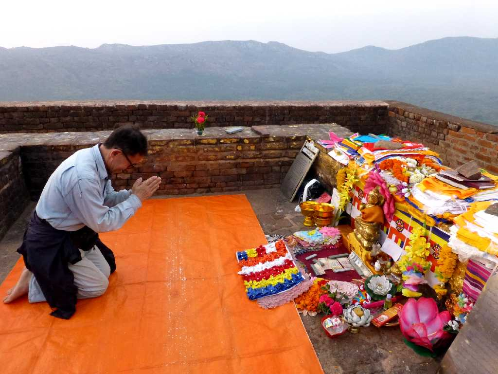
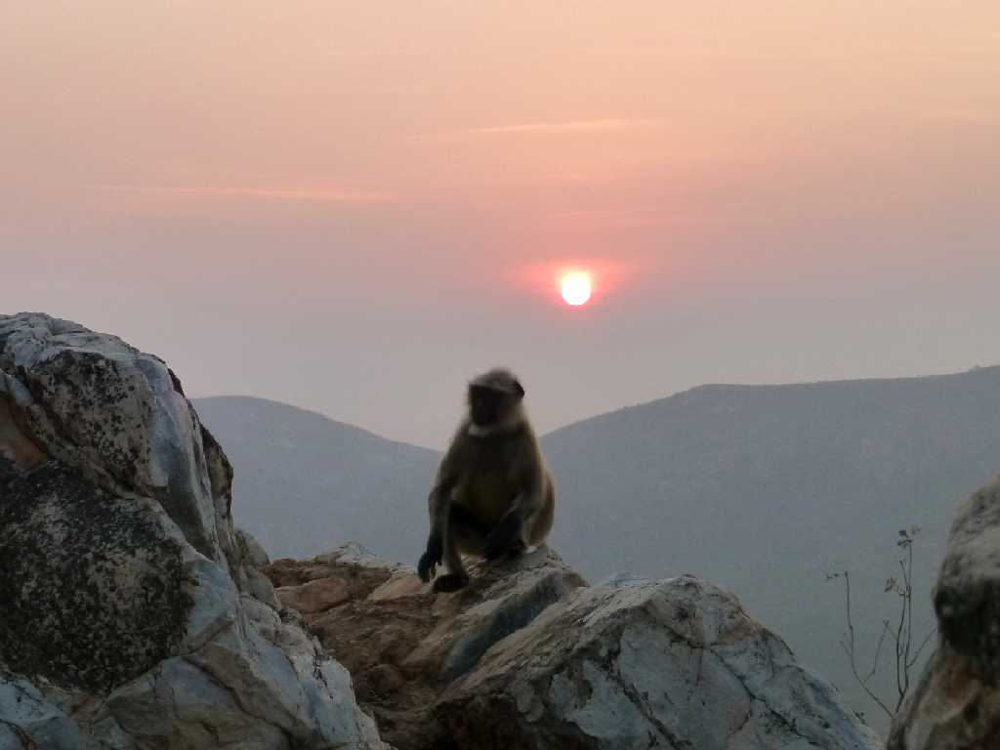
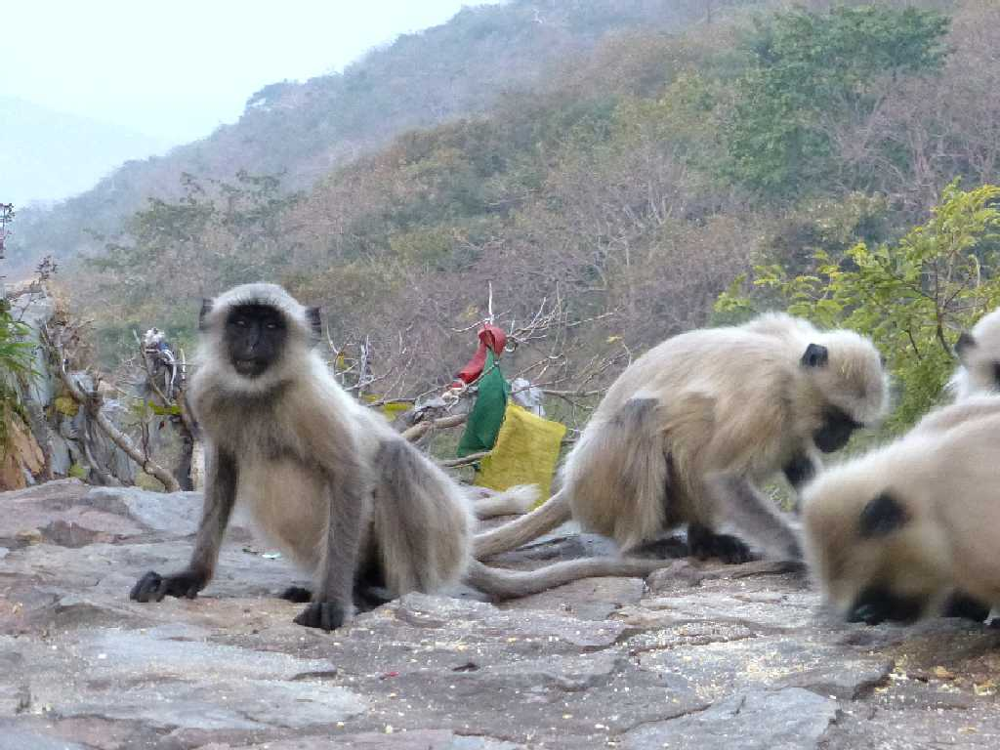

Mulakandha Kuti Rajgir
王舎城の霊鷲山は釈迦が法華経や無量寿経を説いたと云われる説法台に線香を挙げお祈り

February 4 2015 Mulakandha Kuti

February 4 2015 6:38 Sunrise Gray Lungur Mulakandha Kuti

Hanuman Langur Gray Lungur Mulakandha Kuti
インドでは牛とともに信仰の対象となっており全身が白い毛で覆われている白猿はハヌマンラングールと云われ白い猿の姿をした神様の生まれ変わりとされている